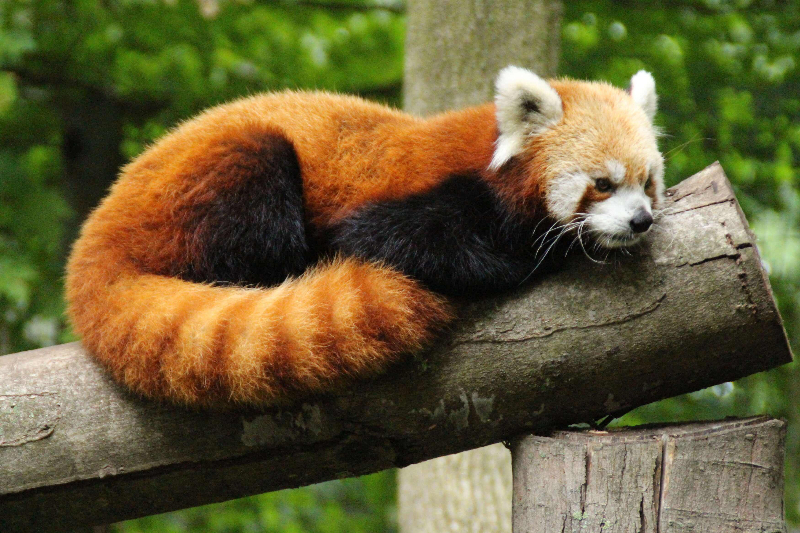
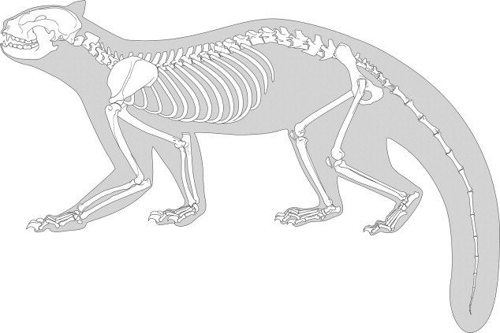
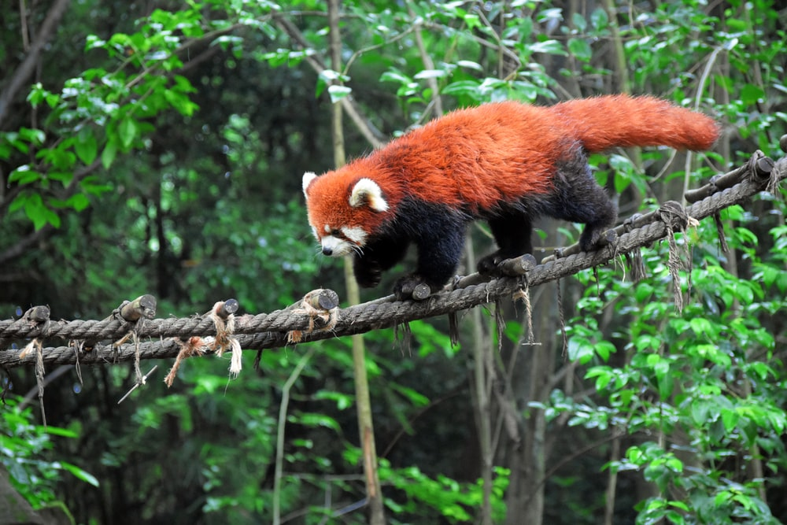
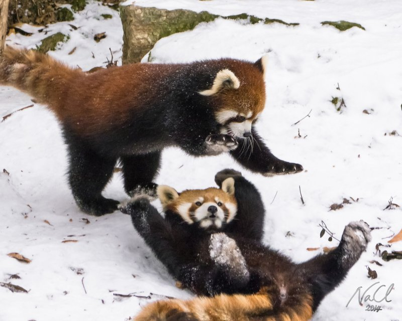
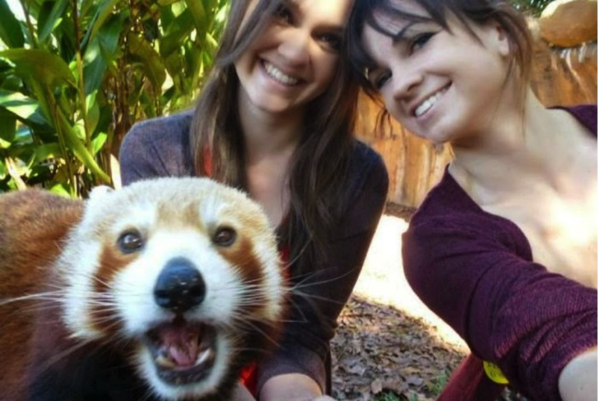

ABOUT
Red pandas can be easily identified by their unique ruddy coat color, which acts like camouflage within the canopy of fir trees where branches are covered with clumps of reddish-brown moss and white lichens.
They have large, round heads and short snouts with big, pointed ears. Their faces are white with reddish-brown "tear" marks that extend from the eyes to the corner of the mouth. These markings could have evolved to help keep the sun out of their eyes. Their tails are marked with alternating red and buff rings.
Red pandas have a soft, dense woolly undercoat covered by long, coarse guard hairs. Long, bushy tails help these arboreal animals maintain balance and protect them from harsh cold and winds. Dense fur completely covers their feet which have five, widely separated toes and semi-retractable claws.
TAXONOMY
Red pandas are the only living member of the Ailuridae family, and their taxonomic position has long been a subject of scientific debate. They were first described as members of the raccoon family (Procyonidae)—a controversial classification—in 1825, because of ecological characteristics and morphological similarities of the head, dentition and ringed tail. Later, due to some agreements in DNA, they were assigned to the bear family (Ursidae).
Most recent genetic research, however, places red pandas in their own, independent family: Ailuridae. Molecular phylogenetic studies show that red pandas are an ancient species in the order Carnivora (superfamily Musteloidea) and are probably most closely related to the group that includes weasels, raccoons and skunks.

BIOLOGY
Red pandas scent-mark territories using
anal glands and urine, as well as scent glands located between their footpads. These scent glands on the bottom of red pandas’ feet exude a colorless liquid that is odorless to humans. The red panda tests odors using the underside of its tongue, which has a cone-like structure for collecting liquid and bringing it close to a gland inside its mouth. It is the only carnivore with this adaptation. In contrast with other carnivores their size, red pandas have extremely robust dentition. They also have a simple carnivore stomach, despite their predominantly leaf-based diet. Red pandas share the giant panda’s pseudo-thumb, a modified wrist bone used to grasp bamboo when feeding.

ECOLOGY
Red pandas range from northern Myanmar (Burma) to the west Sichuan and Yunnan Provinces of China. They are also found in suitable habitat in Nepal, India and Tibet. The Ailurus fulgens fulgens subspecies is found in Nepal, northeastern India, Bhutan and part of China, while the Ailurus fulgens styani subspecies is found in China and northern Myanmar. Red pandas live in high-altitude temperate forests with bamboo understories in the Himalayas and high mountains.

BEHAVIORS
Red pandas are generally quiet, but subtle vocalizations—such as squeals, twitters and huff-quacks—can be heard at close proximity. They may also hiss or grunt, and young cubs use a whistle, or high-pitched bleat, to signal distress. Red pandas will climb trees and rocks to escape predators, such as leopards and jackals.
Red pandas are solitary except during the breeding.
Bamboo constitutes 85 to 95 percent of the red panda’s diet. Unlike giant pandas that feed on nearly every above-ground portion of bamboo (including the culm, or woody stem), red pandas feed selectively on the most nutritious leaf tips and, when available, tender shoots.

RELATIONSHIP WITH HUMANS
In human care, red pandas can be active at any time of day but are primarily crepuscular, or most active at dawn and dusk. On average, they spend about 45 percent of the day awake and tend to be more active in cooler weather, especially during the winter mating season.
At the Smithsonian’s National Zoo, red pandas eat bamboo throughout the day. They are also fed leaf-eater biscuits and fruits, such as grapes, chopped apples and bananas.
